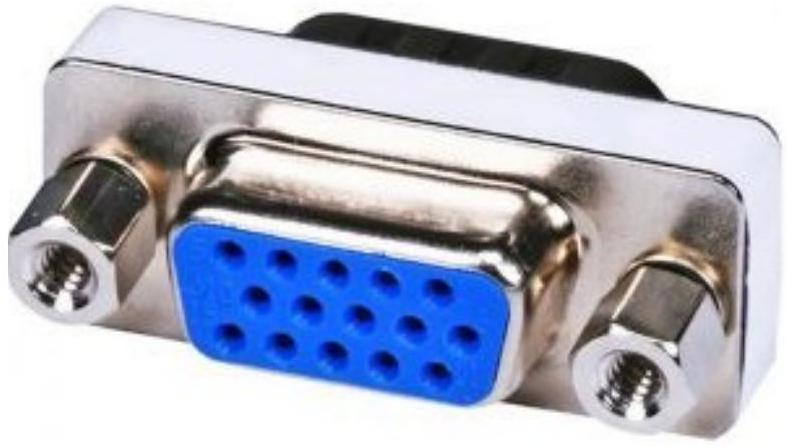
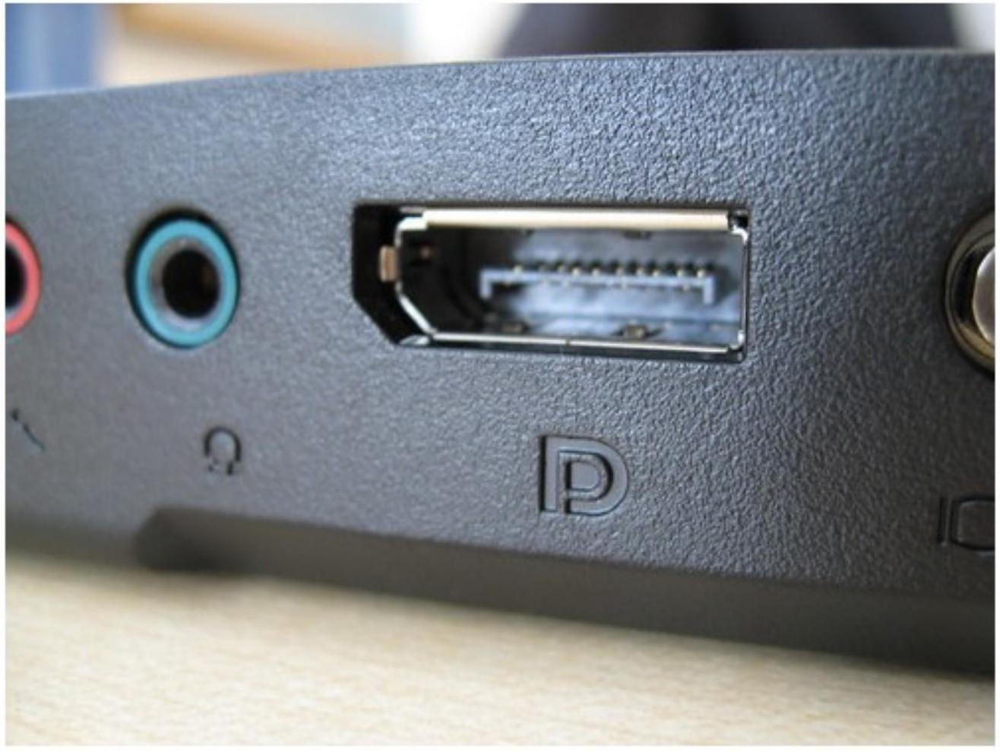

Basic Hardware Connectivity and Maintenance
1. Computer Ports
PS/ 2, Serial Port, Parallel Ports, Audio Ports, Video Ports, VGA Port, Digital Video Interface (DVI), Display Port, HDMI,USB, Connecting a computer to power and computer devices, Booting a computer, How BIOS work, Boot devices , Boot sequences.
PS/2
PS/2 connector is developed by IBM for connecting mouse and keyboard. It was introduced with IBM's Personal Systems/2 series of computers and hence the name PS/2 connector. PS/2 connectors are color coded as purple for keyboard and green for mouse.

PS/2 is a 6-pin DIN connector. The pin out diagram of a PS/2 female connector is shown below.
| Pinout Diagram | Pin Number | Description |
|---|---|---|
 |
1 | Data |
| 2 | No Connection | |
| 3 | Ground | |
| 4 | +5V | |
| 5 | Clock | |
| 6 | No Connection |
Serial Port
Even though the communication in PS/2 and USB is serial, technically, the term Serial Port is used to refer the interface that is compliant to RS-232 (Recommended Standard) standard. There are two types of serial ports that are commonly found on a computer: DB25 and DE-9.
DB-25
DB-25 is a variant of D-sub connector and is the original port for RS-232 serial communication. They were developed as the main port for serial connections using RS-232 protocol but most of the applications did not require all the pins. Hence, DE-9 was developed for RS-232 based serial communication while DB-25 was rarely used as a serial port and often used as a parallel printer port as a replacement of the Centronics Parallel 36 pin connector.

DE-9 or RS-232 or COM Port
DE-9 is the main port for RS-232 serial communication. It is a D-sub connector with E shell and is often miscalled as DB-9. A DE-9 port is also called as a COM port and allows full duplex serial communication between the computer and it's peripheral. Some of the applications of DE-9 port are serial interface with mouse, keyboard, modem, uninterruptible power supplies (UPS) and other external RS-232 compatible devices.

Parallel Port or Centronics 36 Pin Port
Parallel port is an interface between computer and peripheral devices like printers with parallel communication. The Centronics port is a 36 pin port that was developed as an interface for printers and scanners and hence a parallel port is also called as a Centronics port. Before the wide use of USB ports, parallel ports are very common in printers. The Centronics port was later replaced by DB-25 port with parallel interface.
Audio Ports
Audio ports are used to connect speakers or other audio output devices with the computer. The audio signals can be either analogue or digital and depending on that the port and its corresponding connector differ.

VGA Port
VGA port is found in many computers, projectors, video cards and High Definition TVs. It is a D-sub connector consisting of 15 pins in 3 rows. The connector is called as DE-15.
VGA port is the main interface between computers and older CRT monitors. Even the modern LCD and LED monitors support VGA ports but the picture quality is reduced. VGA carries analogue video signals up to a resolution of $648 \times 480$.
Digital Video Interface (DVI)
DVI is a high speed digital interface between a display controller like a computer and a display device like a monitor. It was developed with an aim of transmitting lossless digital video signals and replace the analogue VGA technology.

Display Port
Display Port is a digital display interface with optional multiple channel audio and other forms of data. Display Port is developed with an aim of replacing VGA and DVI ports as the main interface between a computer and monitor.
The latest version DisplayPort 1.3 can handle a resolution up to 7680 X 4320.
Component Video
Component Video is an interface where the video signals are split into more than two channels and the quality of the video signal is better that Composite video.
Like composite video, component video transmits only video signals and two separate connectors must be used for stereo audio. Component video port can transmit both analogue and digital video signals.
The ports of the commonly found Component video use 3 connectors and are color coded as Green, Blue and Red.

HDMI
HDMI is an abbreviation of High Definition Media Interface. HDMI is a digital interface to connect High Definition and Ultra High Definition devices like Computer monitors, HDTVs, Blu-Ray players, gaming consoles, High Definition Cameras etc.
HDMI can be used to carry uncompressed video and compressed or uncompressed audio signals. The HDMI port of type A is shown below.

RJ-45
Ethernet is a networking technology that is used to connect your computer to Internet and communicate with other computers or networking devices.
The interface that is used for computer networking and telecommunications is known as Registered Jack (RJ) and RJ - 45 port in particular is used for Ethernet over cable. RJ-45 connector is an 8 pin - 8 contact (8P - 8C) type modular connector.
The latest Ethernet technology is called Gigabit Ethernet and supports a data transfer rate of over 10 Gigabits per second. The Ethernet or a LAN port with 8P-8C type connector along with the male RJ-45 cable is shown below.

2. Booting a computer
Introduction
Booting is a start-up sequence that starts the operating system of a computer when it is turned on. A boot sequence is the initial set of operations that the computer performs when it is switched on. Every computer has a boot sequence. The average computer doesn't understand the boot sequence but is important to know for customizing and troubleshooting your computer.
Boot Loader
Computers powered by the central processing unit can only execute code found in the systems memory. Modern operating systems and application program code and data are stored on nonvolatile memories or mass storage devices. When a computer is first powered on, it must initially rely only on the code and data stored in nonvolatile portions of the systems memory. At boot time, the operating system is not really loaded and the computer's hardware cannot peform many complex systems actions.
The program that starts the "chain reaction" which ends with the entire operating system being loaded is known as the boot loader (or bootstrap loader). The term creatively came from early designiners imagining that before a computer "runs" it must have it's "boots strapped". The boot loader's only job is to load other software for the operating system to start. Often, multiple-stage boot loaders are used, in which several small programs of increasing complexity sequentially summon one after the other, until the last of them loads the operating system.
Boot Devices
The boot device is the device from which the operating system is loaded. A modern PC BIOS (Basic Input/Output System) supports booting from various devices. These include the local hard disk drive, optical drive, floppy drive, a network interface card, and a USB device. Typically, the BIOS will allow the user to configure a boot order. If the boot order is set to:
- CD Drive
- Hard Disk Drive
- Network
then the BIOS will try to boot from the CD drive first, and if that fails then it will try to boot from the hard disk drive, and if that fails then it will try to boot from the network, and if that fails then it won't boot at all.
Boot Sequence
There is a standard boot sequence that all personal computers use. First, the CPU runs an instruction in memory for the BIOS. That instruction contains a jump instruction that transfers to the BIOS start-up program. This program runs a power-on self test (POST) to check that devices the computer will rely on are functioning properly. Then, the BIOS goes through the configured boot sequence until it finds a device that is bootable. Once BIOS has found a bootable device, it loads and executes its boot sector.
If the boot device is a hard drive, it will be a master boot record (MBR). The MBR code checks the partition table for an active partition. If one is found, the MBR code loads that partition's boot sector and executes it. The boot sector is often operating system specific, however in most operating systems its main function is to load and execute the operating system kernel, which continues startup. If there is no active partition or the active parition's boot sector is invalid, the MBR may load a secondary boot loader which will select a partition and load its boot boot secotr, which usually loads the corresponding operating system kernel.